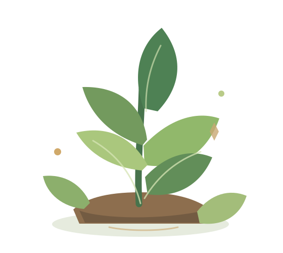
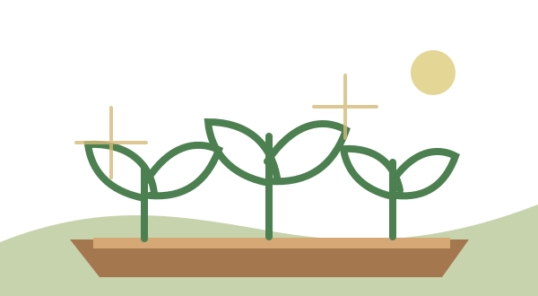
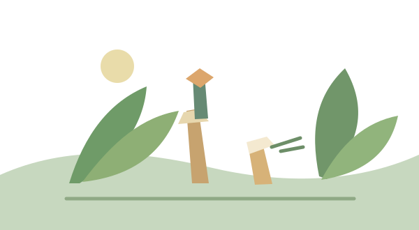

Razdvajaj otpad
Učimo kako pravilno odvajati papir, plastiku i ostale materijale.
ZAJEDNO ZA BOLJU ŠKOLU
Vjerujemo da održivija budućnost počinje tamo gdje provodimo veliki dio dana - u našoj školi. Jedna dobra navika može pokrenuti mnogo toga.

RASTI PONOVI01 / KO SMO MI
GreenSpot je inicijativa učenika koji žele da školski prostor bude čišći, zeleniji i ugodniji za sve.
Ne bavimo se velikim obećanjima, nego konkretnim koracima: pravilnim razdvajanjem otpada, brigom o biljkama, ponovnom upotrebom stvari i dijeljenjem dobrih ideja. Svako može doprinijeti - bez posebnog iskustva i bez velikih troškova.
Pogledaj šta radimo02 / NAŠ PRISTUP
Počinjemo od onoga što možemo promijeniti danas. Ovo su četiri pravca našeg djelovanja.
Učimo kako pravilno odvajati papir, plastiku i ostale materijale.
Uređujemo male zelene kutke i brinemo o biljkama u školi.
Razmjenjujemo knjige, pribor i predmete kojima možemo produžiti vijek.
Pokrećemo razgovore i male izazove koji inspirišu druge učenike.
03 / U POKRETU
Svaki projekat je prilika da naučimo nešto novo i uključimo još nekoga.


Prikazani projekti predstavljaju planirane i ogledne aktivnosti inicijative.
04 / ZAŠTO JE VAŽNO
Ne mjerimo uspjeh samo brojevima. Mjerimo ga navikama koje ostaju, ljudima koji se uključe i idejama koje nastave živjeti.
Napravi prvi korakRazmišljamo prije nego što nešto bacimo.
Brinemo o prostoru koji dijelimo.
Uključujemo jedni druge i dijelimo znanje.
05 / TVOJ RED
Imaš prijedlog, želiš pomoći ili samo saznati više? Javi nam se.
Ne treba ti iskustvo. Potrebna je samo volja da doprineseš.